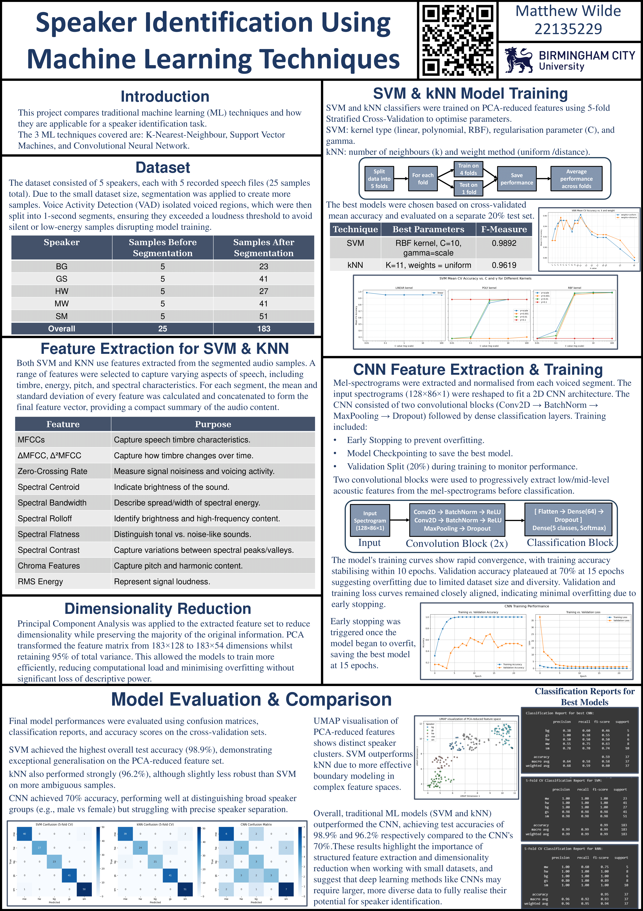

Contents
Music
University (Pro Tools)
Noone Knows (Cover)
Rock Cover
Acoustic Guitar & Vocals (F)
Folk / Singer-Songwriter
Acoustic Guitar & Vocals (M)
Pop / Singer-Songwriter
Solo Piano Recording
Classical / Instrumental
Solo Violin (Year 1)
Classical / Instrumental
Solo Violin (Year 2)
Classical / Instrumental
Solo Vocal Recording
Vocal Performance
Big Band Afro (Live)
Jazz / Big Band
Big Band Sailor (Live)
Jazz / Big Band
Big Band Jazz (Live)
Jazz / Big Band
College (Logic Pro X)
Lady, Hear Me Tonight (Cover)
Pop
My House (Cover)
Pop
Sound Design
University: My Neighbor Totoro
Audio replacement, foley, ADR, sound design for a cooking scene.
College: Star Wars – Revenge of the Sith
Sound design and mixing for a Star Wars scene.
Game Design
Solo (Unreal + Wwise)
First solo project showcasing Unreal Engine and Wwise integration.
Only audio done by me. All visual assets taken from Unreal Store.
University (Unity + FMOD)
Group project walkthrough featuring Unity and FMOD audio systems. This game can be played beneath.
Embedded Unity WebGL Game
Live Sound Event Planning
Overview of my Live Sound Event planning workflow, created as a Google Slides presentation:
Arduino-Based Synthesizer
Details of the Arduino-powered synthesizer project (MATLAB/C++ prototype overview):
Research & Project Posters
MIR Project Poster
“Speaker Identification Using Machine Learning Techniques”
Final Year Project Poster

“An Investigation of a Wavelet‐Based Approach for Automated Restoration of Vintage Audio”
Dissertation
You can download my full Individual Honours dissertation below:
Download Dissertation (PDF)